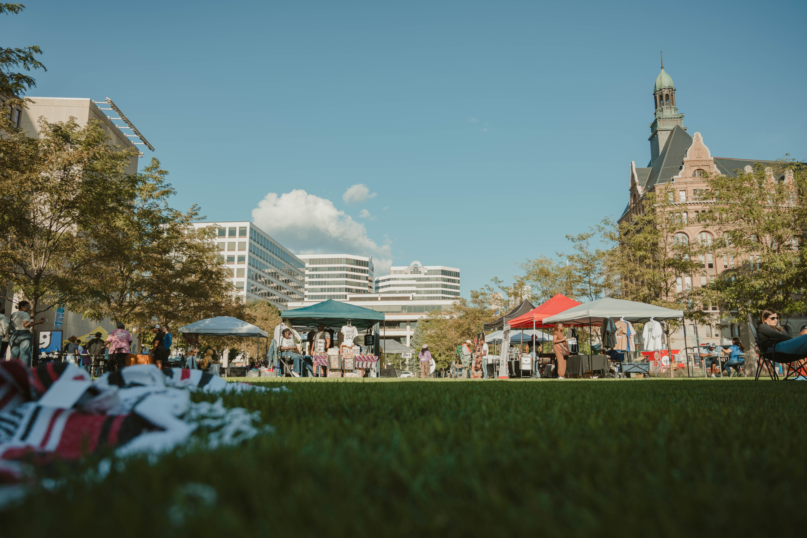
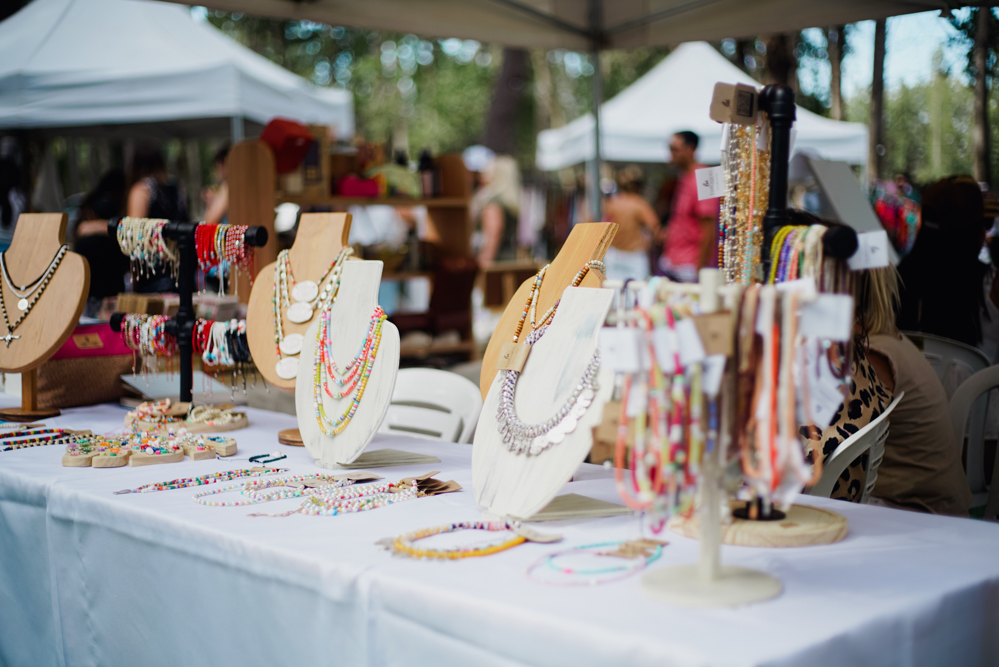

Community Art Market
Date: April 20, 2026
Location: Discovery Green
Shop handmade artwork, meet local artists, and enjoy food, music, and family activities.
Meet local artists and enjoy fun community events.
Join us throughout the year as we celebrate handmade artwork, meet local artists, and bring our community together through fun and creative events.
Date: April 20, 2026
Location: Discovery Green
Shop handmade artwork, meet local artists, and enjoy food, music, and family activities.

Date: May 10, 2026
Location: Downtown Art Center
Explore beautiful artwork from local artists and learn about different handmade crafts.

Date: June 5, 2026
Location: University of Houston
Learn new crafting skills and create your own handmade project to take home.

Date: July 12, 2026
Location: Memorial Park
Shop unique handmade products, support local artists, and enjoy a relaxing day outdoors.

Date: August 9, 2026
Location: Buffalo Bayou Park
Meet talented artists, discover handmade gifts, and enjoy a fun event with friends and family.

Date: September 18, 2026
Location: Houston Farmers Market
Browse beautiful handmade jewelry, talk with local makers, and find something special to take home.
Everyone is welcome! Whether you are an artist, student, collector, or simply enjoy handmade art, we would love to see you at our events.
Meet new people, support local artists, learn new skills, and have fun exploring handmade artwork.
We add new events throughout the year, so check back often to see what's coming next.